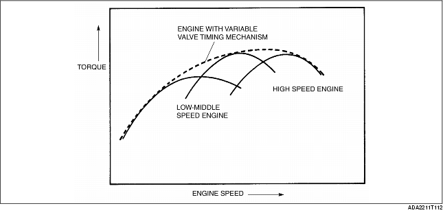

VARIABLE VALVE TIMING MECHANISM OUTLINE [ZY]
id0110001019c0
• A variable timing mechanism has been adopted that realizes optimum valve timing according to engine operation conditions by continuously modifying the phases of the intake camshaft and crankshaft.
